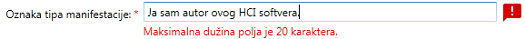
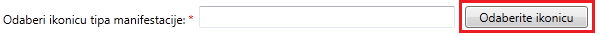

Sva polja koja su označena sa * su obavezna.
Softver Vam neće dozvoliti potvrdu unosa dok ne unesete sva obavezna polja.
Oznaka tipa manifestacije
Oznaka tipa manifestacije mora da ima između 8 i 20 karaktera,
sadrži samo brojeve i cifre i
jedinstvena je.
Oznaka tipa manifestacije predstavlja jedinstvenu vrijednost za svaku manifestaciju.
U dijalogu Vam je dat jedan primjer ispravne oznake tipa manifestacije u okviru polja za unos npr. Obrazovna.
Svi neispravni unosi prikazani su kao na slici 1, a prelaskom kursora miša preko ikonice u tooltip-u će Vam
se prikazati informacije o formatu ispravnog unosa.

Slika 1. Format poruke korisniku kod neispravnog unosa oznake tipa manifestacije
Naziv tipa manifestacije
Naziv manifestacije je obavezan i
sadrži najviše 30 karaktera.
Naziv tipa manifestacije definiše korisniku lako prepoznavanje tipa manifestacije.
Format poruke koji se prikazuje korisniku kod neispravnog unosa je isti kao i kod oznake tipa manifestacije. (Slika 1)
Ikonica tipa manifestacije
Ikonicu manifestacije birate sa Vašeg računara. Preporuka je da bude iste visine i širine. Moguće je dodati samo
datoteke koje su odgovarajućeg tipa (npr: .jpg, .jpeg, .png ili .gif).
Da biste odabrali ikonicu tipa manifestacije potrebno je da uradite sljedeće:
Kliknete na dugme Odaberite ikonicu označenog na slici 2.

Slika 2. Dugme za odabir ikonice tipa manifestacije
Odaberete željenu ikonicu unutar dijaloga za odabir fajlova i potvrdite unos.
Kada ste uspješno dodali ikonicu, u tekstualnom polju će Vam se pojaviti putanja do odabrane ikonice.
Opis tipa manifestacije
Opis tipa manifestacije je obavezan i
sadrži najviše 160 karaktera.
U ovom polju potrebno je napisati detaljan opis tipa manifestacije. Ograničen je na 160 karaktera, a greška se prikazuje
u formatu kao na slici 1.